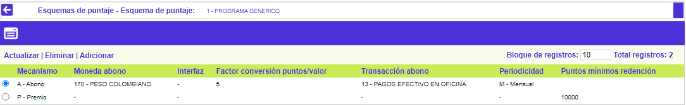

Esquemas de puntajes - Parámetros adicionales II
Parametros adicionales : En este espacio la entidad define, de una parte, los lineamientos especiales correspondientes al mecanismo de redención de puntos y, de otro lado, la secuencia y condiciones de orden y si aplica o no la fuente de generación de los puntos. Es importante tener en cuenta que la relación esquema puntajes/mecanismo de redención es uno a uno, o en otras palabras, es posible asociar un único mecanismo de redención por esquema.
A través de los botones Salvar o Cancelar, se regresa al formulario principal de Esquemas de puntajes.

RedenciónCampos que contienen los parámetros para identificar la manera como se harán efectivos los puntos obtenidos por los clientes y la frecuencia de ejecución.
|
Mecanismo |
Determina la manera mediante la cual se harán efectivos los puntos acumulados de que disponga el cliente a la fecha del corte, y que pueden ser redimidos de tres maneras: Abono, premio o interfaz. El mecanismo de abono se refiere a la transformación de los puntos acumulados, mediante la aplicación de un factor de conversión definido en el campo siguiente, en una transacción de pago que se aplicará al cliente en el proceso diario del día hábil siguiente. El mecanismo de premio permite redimir los puntos acumulados mediante la entrega al cliente de cualesquiera de los artículos definidos en la opción Premios puntaje de este módulo, siempre que el cliente disponga de la cantidad de puntos requeridos para hacer efectivo dicho premio. El mecanismo de interface se refiere a las millas a que puede tener derecho el cliente siempre y cuando el esquema al que pertenezca tenga definido este mecanismo de acumulación y disponga de la cantidad de puntos requerida para hacer efectivo el premio, acorde con lo indicado en la opción Premios puntaje de este módulo. La interface en cuestión corresponde a un archivo plano con la información suficiente y necesaria para poder administrar, a través de un tercero (si es del caso), la redención de los puntos mediante éste mecanismo. |
|
Moneda abono |
Campo con lista de valores de la que se debe seleccionar el código de la Moneda en la cual se convertirá la transacción de pago cuando el mecanismo de redención corresponda a abono, permitiendo de esta manera definir una moneda diferente a la señalada como referencia para la administración de los puntos (metas). |
|
Interfaz |
Campo que posee una lista de valores poblada de acuerdo a las necesidades de la entidad, desde la cual se debe seleccionar la interface asociada que genera el archivo plano con la información requerida para la redención de los puntos en millas. |
|
Factor conversión puntos/valor |
Una vez el mecanismo de redención seleccionado corresponda a abono, en este campo se determina el valor de cada unidad monetaria a la cual se van a convertir los puntos acumulados, en otras palabras, se multiplica el número de puntos disponibles a redimir por el valor aquí indicado y ese será el monto máximo del abono a aplicar al cliente. |
|
Transacción interna |
Este campo contiene una lista de valores poblada a través de la opción Transacciones por empresa del módulo de Mercadeo, de la cual se debe seleccionar el código de la transacción con la cual se identificará el concepto de aplicación de pago al cliente, cuando el mecanismo de redención corresponda a abono. |
|
Periodicidad |
Determina la frecuencia o el número de períodos (expresado en meses) en los cuales se realiza el proceso de liquidación de puntos para convertirlos en transacción de pago aplicable al cliente, cuando el mecanismo de redención corresponda a abono o interface. El sistema evalúa éste parámetro al momento de ordenarse la ejecución del proceso. |
|
Puntos mínimos redención |
Determina la cantidad de puntos minimos para ser redimibles segun catalogo de premios. |